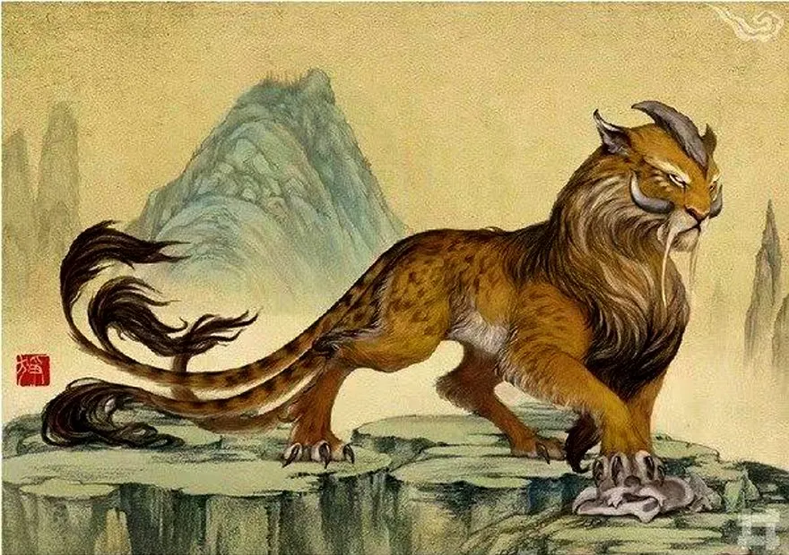

Five-tail creature Zheng
Zheng
A five-tail creature called Zheng, specialized in preying on man-eating beasts like tigers and leopards.
Appearance
- Size: Zheng is slightly larger than an average tiger, with a robust and muscular build suited for combat.
- Tails: It has five long, flowing tails, each with a sharp, blade-like tip. The tails are prehensile and can be used for both offense and defense.
- Fur: Its body is covered in sleek, dark fur, usually black or deep grey, making it hard to spot in dense forests or at night.
- Eyes: Glowing amber or golden eyes that give it exceptional night vision, helping it detect threats and prey in the darkness.
- Fangs and Claws: Razor-sharp fangs and retractable claws designed to pierce the thick hides of predators like tigers or leopards.
- Markings: Distinctive luminous markings along its body, which may glow faintly when it’s hunting or threatened.
Abilities
- Predator Tracker: Possesses an acute sense of smell and heightened senses, allowing it to track man-eating beasts from miles away.
- Agility and Speed: Despite its size, Zheng is incredibly fast and agile, capable of outmaneuvering large predators in dense environments.
- Stealth: Its ability to blend into shadows and move silently makes it an excellent ambush hunter, catching even the most cautious of predators off guard.
- Tail Control: Each of its five tails can act independently, helping it to strike, bind, or disarm multiple foes at once. The tails are sharp enough to cut through bone and thick fur.
- Healing Factor: It has a rapid healing ability, allowing it to recover quickly from injuries sustained during battle.
Behavior
- Solitary Hunter: Zheng tends to hunt alone, focusing on taking down large, dangerous carnivores that threaten human settlements.
- Territorial: It marks its territory fiercely, and other predators, even the strongest, tend to avoid areas claimed by Zheng.
- Protector Role: Despite its fearsome nature, it only targets beasts that pose a direct threat to humans, particularly those that have developed a taste for human flesh.
- Intelligence: Highly intelligent and strategic in its attacks, using the environment to its advantage, such as luring predators into traps or ambushes.
- Loyalty: If befriended or respected, Zheng is known to be protective of certain humans, though this relationship is rare.
Habitat
- Dense Forests and Mountains: Zheng primarily lives in dense forests, mountainous regions, and areas where dangerous predators lurk. It prefers regions where it can easily stalk its prey and use the terrain to its advantage.
- Secluded Caves: It makes its lair in secluded caves or hidden areas where it can rest between hunts.
Mythology and Significance
- Legendary Hunter: In local mythology, Zheng is seen as a guardian of forests and villages, keeping human populations safe from vicious predators.
- Symbol of Protection: It is often revered as a symbol of protection and strength, with stories passed down of how Zheng has saved communities from ravenous beasts.
- Feared but Respected: While feared for its immense power, Zheng is also respected and honored by those who understand its role in maintaining balance in the wild.
Weakness
- Fire: Zheng is particularly vulnerable to fire, as its fur and markings are highly flammable, which forces it to avoid human settlements that use fire as protection.
- Group Attacks: Although strong against individual predators, Zheng can be overwhelmed if faced with coordinated attacks from multiple enemies.
Conclusion
The Zheng stands as a formidable guardian of the wild, renowned for its role in controlling dangerous man-eating beasts and ensuring the safety of human settlements. With its powerful build, five versatile tails, and exceptional hunting skills, Zheng represents a blend of strength, agility, and strategic prowess. Its stealth and tracking abilities make it an adept predator of the most fearsome carnivores, while its protective nature highlights its role as a defender of the natural order. In mythology, Zheng is revered as both a protector and a symbol of balance, embodying the complex interplay between danger and safety in the wild. Despite its fearsome reputation, Zheng’s vulnerabilities—such as susceptibility to fire and challenges in group confrontations—remind us of its limits and the delicate balance it maintains in its environment. As a creature of both awe and respect, Zheng's legacy continues to inspire stories of valor and guardianship, underscoring its importance in the folklore of the regions it inhabits.
Threat level
For human: 0/10
For other creatures: 10/10